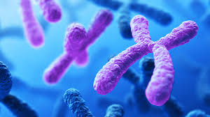
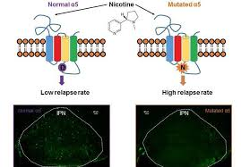
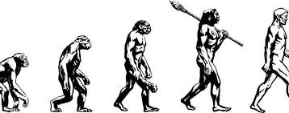

HISTORY
The observation that living things inherit traits from their parents has been used
since prehistoric times to improve crop plants and animals through selective breeding.
The modern science of genetics, seeking to understand this process, began with
the work of the Augustinian friar Gregor Mendel in the mid-19th century.
Prior to Mendel, Imre Festetics, a Hungarian noble, who lived in Kőszeg before Mendel, was
the first who used the word "genetics." He described several rules of genetic inheritance
in his work The genetic law of the Nature (Die genetische Gesätze der
Natur, 1819). His second law is the same as what Mendel published. In his third
law, he developed the basic principles of mutation

MUTATIONS
During the process of DNA replication, errors occasionally occur in the polymerization
of the second strand. These errors, called mutations, can affect the phenotype of an organism,
especially if they occur within the protein coding sequence of a gene. Error
rates are usually very low—1 error in every 10–100 million bases—due to the
"proofreading" ability of DNA polymerases.[76][77] Processes that increase the
rate of changes in DNA are called mutagenic: mutagenic chemicals promote errors in DNA
replication,often by interfering with the structure of base-pairing, while UV radiation induces
mutations by causing damage to the DNA structure.[78] Chemical damage to DNA occurs
naturally as well and cells use DNA repair mechanisms to repair mismatches
and breaks. The repair does not, however, always restore the original sequence.
A particularly important source of DNA damages appears to be reactive oxygen species
produced by cellular aerobic respiration, and these can lead to mutations.

EVOLUTION
Mutations alter an organism's genotype and occasionally this causes different phenotypes
to appear. Most mutations have little effect on an organism's phenotype, health, or
reproductive fitness.[82] Mutations that do have an effect are usually
detrimental, but occasionally some can be beneficial.[83] Studies in the
fly Drosophila melanogaster suggest that if a mutation changes a protein produced
by a gene, about 70 percent of these mutations will be harmful with the remainder being
either neutral or weakly beneficial.
